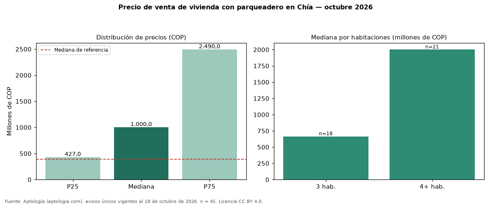

Precio de venta de vivienda con parqueadero en Chía — octubre 2026
Con 45 avisos únicos, el precio mediano de vivienda con parqueadero en venta en Chía es COP 1,00 mil millones. Frente a toda la oferta de venta en Chía (COP 390 millones), la diferencia es de 156 % por encima. El rango intercuartílico va de COP 427 millones a COP 2,49 mil millones (razón 5,8). Por metro cuadrado, la mediana es COP 5.888.889/m² (+15 % frente a COP 5.131.661/m²), puesto 3 de 10 ciudades comparables. Por habitaciones: 3 habitaciones, COP 665 millones (n = 18); 4 o más habitaciones, COP 2,00 mil millones (n = 21). El área mediana es 250 m² (referencia: 70 m²). El estrato más frecuente es 4. Datos abiertos CC BY 4.0 de Aptología; fuente y búsqueda de inmuebles: https://www.aptologia.com/venta/chia. Archivos: PDF de 2 páginas, CSV con las cifras y gráfica PNG.

| Avisos únicos | 45 |
|---|---|
| Percentil 25 | COP 427.000.000 |
| Mediana | COP 1.000.000.000 |
| Percentil 75 | COP 2.490.000.000 |
| Mediana por m² | COP 5.888.888 |
Fuente: avisos vigentes de portales inmobiliarios recopilados por Aptología, deduplicados (mínimo 30 avisos únicos por celda). Precios pedidos, no cerrados. Fecha: 2026-10-18.